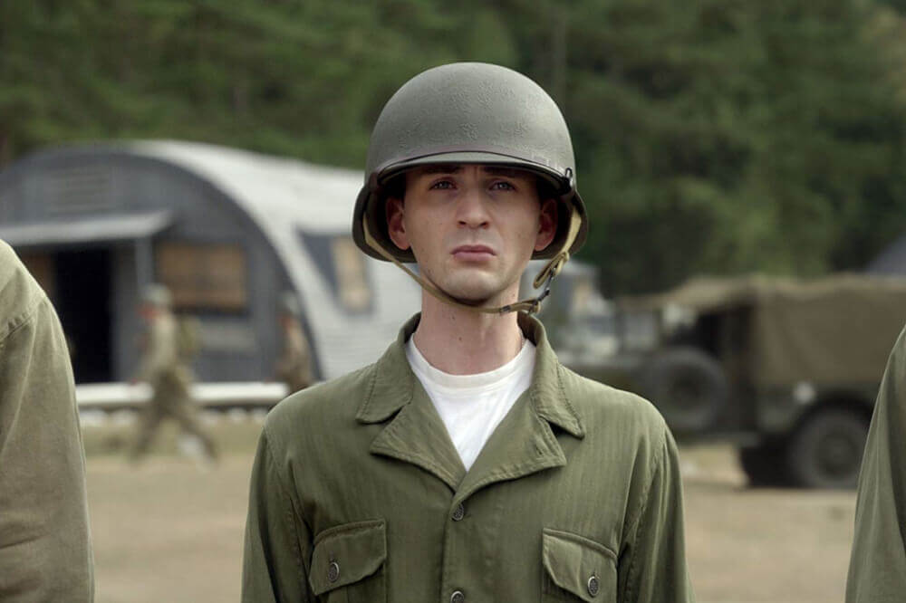
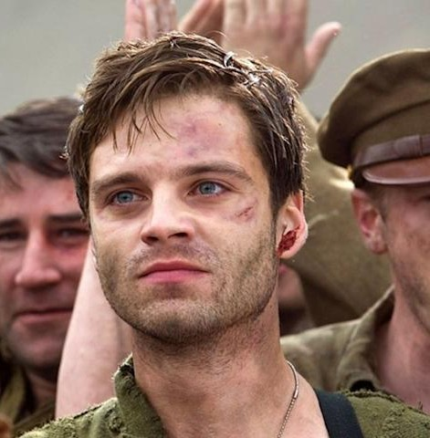
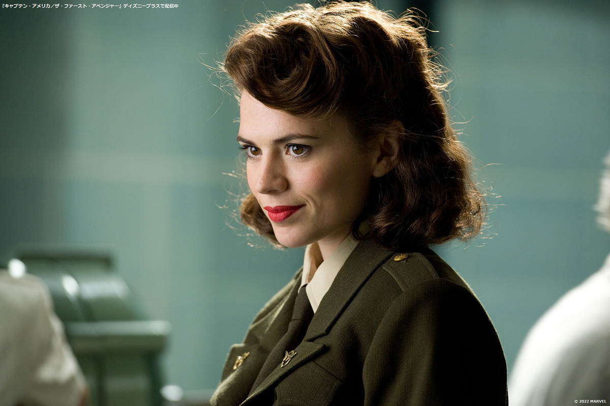
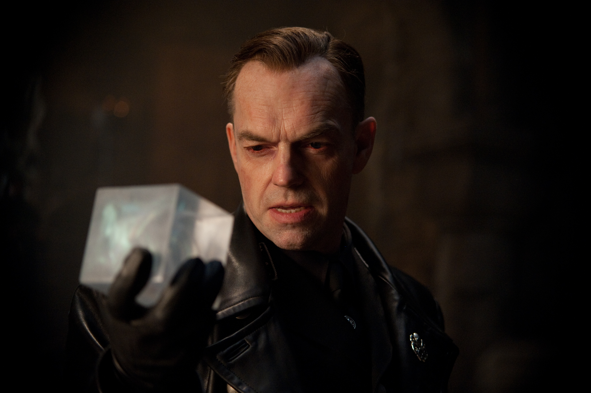

スティーブ・ロジャース / キャプテン・アメリカ
スーパーソルジャー // 愛国心あふれる不屈の英雄
元々は病弱で不条約な青年だったが、強い正義感と愛国心を認められSSRの「超人兵士計画」の被験者に選ばれる。最高硬度のヴィブラニウム製シールドを手に、不屈の精神でヒドラの野望に立ち向かう。
「僕は誰も殺したくない。いじめっ子が嫌いなだけだ。」

ジェームズ・“バッキー”・バーンズ
第107連隊軍曹 / スティーブの親友
スティーブの幼馴染であり、頼れる兄貴分。先に戦地へ赴くがヒドラの捕虜となり、キャプテンとなったスティーブに救出される。その後、精鋭部隊「ハウリング・コマンドーズ」の狙撃手として共に戦線を駆ける。
「俺が付いていくのは、弱いくせに逃げないもやし野郎だけだ。」

ペギー・カーター
SSR（戦略科学予備軍）エージェント
SSRの優秀な女性士官。周囲の男尊女卑な空気を跳ね除け、前線で指揮を執る。スティーブの内に秘めた「強さ」と「優しさ」を最初に見抜き、次第に彼と深く心を通わせていく。
「次の土曜の夜、ストーク・クラブよ。遅れないでね。ダンスのステップを教えてもらうんだから。」

ヨハン・シュミット / レッド・スカル
ナチス科学部門「ヒドラ」の指導者
アースキン博士の開発した不完全な超人血清を自身に投与し、副作用で赤黒い骸骨のような素顔となった男。無限のエネルギーを秘めた「テッセラクト（四次元キューブ）」を手に入れ、世界征服を企む。
「神を恐れぬのではない、私自身が神なのだ！」